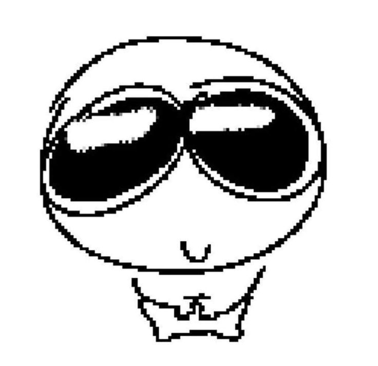
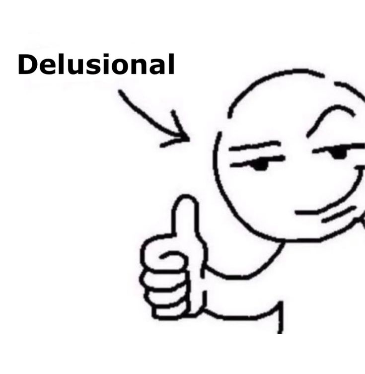

Some journeys don’t start with fanfare or maps – they begin in silence, in shared glances,
in moments that feel small but quietly change everything.
There are stories tucked between the folds of time, carried gently by people who don’t
always realize how deeply they matter.
When paths cross in just the right way, something rare happens. Not loud or flashy, but steady — like roots weaving underground. A connection that grows stronger with each season, weathering storms and offering shade when the sun gets too harsh. This world remembers those roots.
You won’t need to run or prove anything. Just follow the wind, let the questions lead, and see what rises from the quiet. Some treasures can’t be found until you begin walking. So go — the path is yours now.

You won’t need to run or prove anything. Just follow the wind, let the questions lead, and see what rises from the quiet. Some treasures can’t be found until you begin walking. So go — the path is yours now.